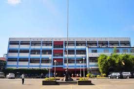

This website serves educational purposes and represents a project under the guidance of Professor Jerie Vale Bautista at Arellano University, Andres Bonifacio Campus, Pasig City. Its primary aim is to consolidate the activities undertaken throughout the semester and to demonstrate the knowledge acquired in the field of Information Technology. The website is developed by myself, Jerimark Gersaniva, as part of the semi-finals project.